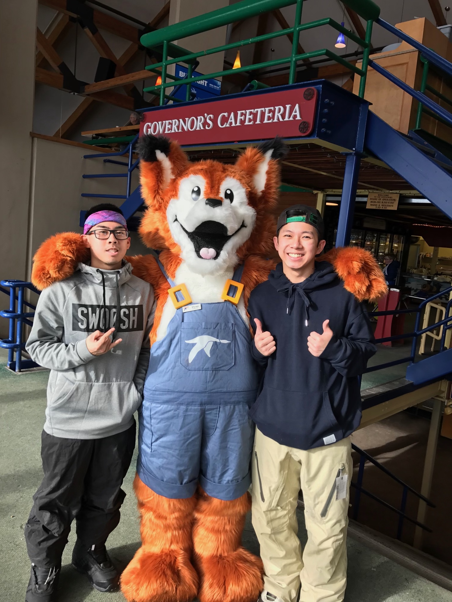
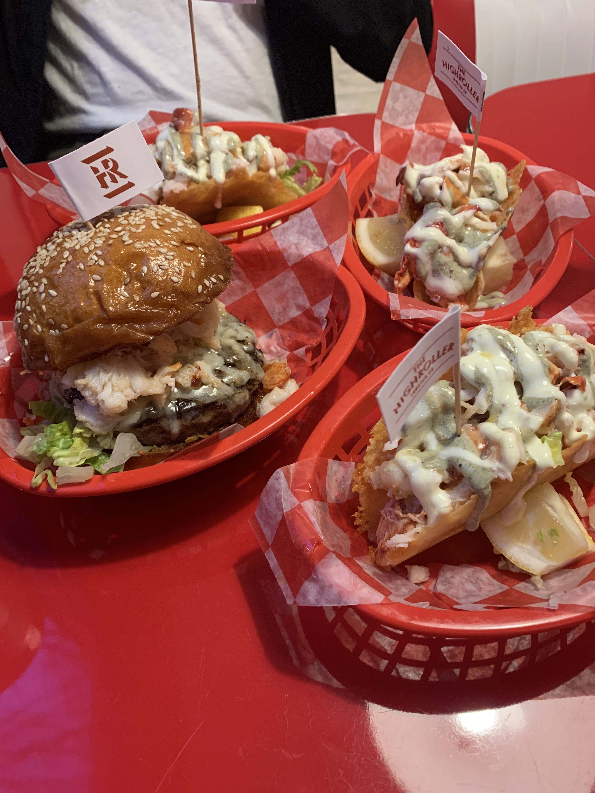

Sports

Living in New england you are bound to be a sports fan, but I definetly enjoy playing the sport more than watching them.
I enjoy the competition, exercise, and skill you gain from playing a sport.
My favorite sport would proabbly be snowboarding, just because I can't do it as often as I would like to.
Travel
 I Love to travel and explore and learn about different areas! It's very suprising learn how different or similar a place is compared to Boston, where I spent my whole life in.
Especially the food! It is probably my favorite part about travelling to other places!
I Love to travel and explore and learn about different areas! It's very suprising learn how different or similar a place is compared to Boston, where I spent my whole life in.
Especially the food! It is probably my favorite part about travelling to other places!
Food

I don't know if eating food is so much of a hobby as it's something I very much enjoy doing.
Growing up in a vvietnamese household, dinner was always something I looked forward to.
My mother would cook so many different cuisines for me and my 8 other siblings.
There was basically an all out war to get as much food as you can before all the food was gone.
I enjoy it more for the people I can share it with and the memories made when sitting in front of tacos and lobster burgers.
Hiking
 Just like what Russell in the Pixar movie "UP" says! "The wilderness must be explored!"
I love going on hikes, mainly to get away from the noise of the city.
It really helps clear my mind and soak in the environments around me.
But not all hikes are like that!
Some can be so challenging that it forces me to focus on whats ahead of me and keep pushing myself to finish and get to the top.
It's absolute bliss once you get to the summit, so you can crack open a beer and soak in the sun.
Then you have to hike back down after an hour, which is probably the less fun part.
Just like what Russell in the Pixar movie "UP" says! "The wilderness must be explored!"
I love going on hikes, mainly to get away from the noise of the city.
It really helps clear my mind and soak in the environments around me.
But not all hikes are like that!
Some can be so challenging that it forces me to focus on whats ahead of me and keep pushing myself to finish and get to the top.
It's absolute bliss once you get to the summit, so you can crack open a beer and soak in the sun.
Then you have to hike back down after an hour, which is probably the less fun part.
Puppy time
 Say hello to my 8 month old German Shepherd Keno! Getting a puppy was honestly one of the best decisions I've made. Although, in the beginning it was an absolute nightmare because there was a huge learning curve for both Keno and me!
But after a couple months he became potty trained and the fun began! I love playing with him and teaching him new tricks!
Having a dog around you all the time definetly helps with my mental health especially during this pandemic, since I was unable to see other people for such a long time!
Say hello to my 8 month old German Shepherd Keno! Getting a puppy was honestly one of the best decisions I've made. Although, in the beginning it was an absolute nightmare because there was a huge learning curve for both Keno and me!
But after a couple months he became potty trained and the fun began! I love playing with him and teaching him new tricks!
Having a dog around you all the time definetly helps with my mental health especially during this pandemic, since I was unable to see other people for such a long time!